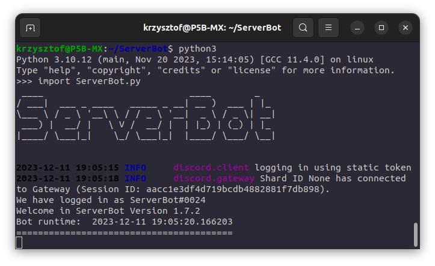
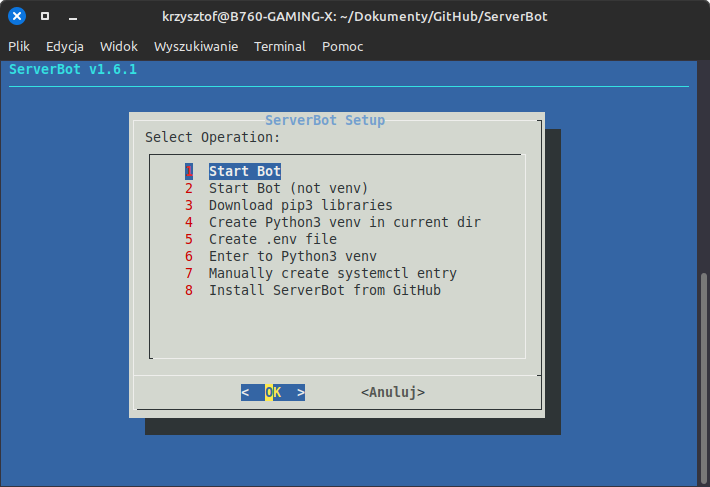

ServerBot User Manual v1.11.0
ServerBot - Discord Bot developed by
Kamile320 that features:
- Server Administration
- Playing music from local files and YouTube URL's
- Host Computer Management
- Executing bash scripts
- Message logging
- Creating threads
- File and Directory Management
- SQLite3 database support
- AI command (using Gemini API)
- Connecting channels between servers
- And more
Content:
- Structure of Directory
- First Run
- Autostartup
- Tokens
- UserID and bot Administrators
- Windows - FFmpeg installation
- Bot Modules/Extensions
- .ai command
- Music Commands
- 'Portal' (connecting channels)
- Database (SQLite3)
- Commands
List of Files and Directories:
- ServerBot.py - Main script file
- setup.bat - File that installs required python libraries (Windows)
- setup.sh - Operation menu: starting the bot, installing required libraries, etc. (requires installation of the "dialog" command)
- Logs.txt - File with the bot event log on the server
- manualPL.html - Bot Manual [PL]
- manualEN.html - Bot Manual [EN]
- Media - Default directory/library for music/sound files
- ACL - User message log (after enabling ACL)
- .env - Special file for Bot Tokens
- .venv - Python Virtual Environment (After using setup.sh - option 4)
- tempDB.txt - Temporary file with database content (after using .showdb command)
-
modules - Directory with bot modules
-
Files - Directory with required (and not) Bot files
- favicon.ico - Manual icon
- updates.txt - List of recent updates
- Logs.txt - Copy of Bot Logs
- autorun.sh - After using .mkservice
- serverbot.db - SQLite3 Database
- systemd_add.py - Systemd service creation script
- Other Files (photos, videos, etc.)
- setup - Config Files
- setuplib.sh - Installer of pip3 Libraries
- mkvenv.sh - Creates venv
- requirements.txt - List of required python libraries
Img. 1 - running the script

First run:
The Bot requires:
- Python 3.9 or later
- Discord.py 2.6.4 or newer
- Internet connection
- Required python libraries installed (see setup.sh/setuplib.sh/requirements.txt contents)
- Adding FFmpeg files to the PATH environment - Windows only (see YT, setup.bat and FFmpeg installation)
- Operating System: Linux (recommended) / Windows / MacOS - 64 bit (recommended; tested on x86_64 and ARMv7l)
- setup.sh - requires the "dialog" command
You should run the script (python3 or setup.sh) through the IDE, terminal or other program.
If something goes wrong, the Bot should let you know what the problem is
and ask for approval of the correction or it will abandon the launch/installation.
After running the script, Bot should connect with Discord and be ready to work.
[!] You can install bot using .deb file - remember that bot will install in /usr/share/serverbot.
Use serverbot command with sudo, if you want to configure
autostart.
The current Bot Commands can be seen using the .help command
Autostart using systemd:
When using the Bot, you may want it to start automatically with the operating system (Linux).
To easily enable this, there is the .mkservice command.
After typing the command, you must provide an additional value:
def - creates default autorun.sh file in the
Files directory. Works on systems based on Ubuntu
22.04 (doesn't use venv)
venv - sometimes when installing modules using pip3 an
externally managed pip error may appear .
In this case, you should create a Python Virtual Environment/Venv.
If you have not created it yet, it is recommended to create it in the main Bot directory (ServerBot).
Example: .mkservice venv - executing command on Discord; script of the Bot runs in main directory.
NOTE! The bot (or rather setup.sh) is adapted to the name of a directory with a virtual environment called ".venv".
If you manually created venv with different directory name, the bot may not start!
It is recommended to use proper options from setup.sh - It will easily install and configure everything needed.
For the autostart to work, you need to set the Bot files with read/write/execute permissions to 775 (r-x for everyone, rwx for owner and group) if those files don't already have them.
I recommend moving the Bot files to the /ServerBot directory (so that it is not in other directories). Do not install bot in your home directory if you want to run it with system startup.
How to create venv:
- in the main bot directory, type: python3 -m venv .venv
- to activate venv: source .venv/bin/activate (as root)
- check version and location: which python
- once you are in venv, run setup.sh
- (optional) to exit venv, type: deactivate
- or simpler - just use option 4 in setup.sh to run automatic install and enter to venv
Full documentation of venv here.
Img. 2 - setup.sh options

Tokens
The Bot uses API tokens of: Discord, Gemini and user IDs.
In order for the bot to run, you need to fill in the
.env file with the appropriate data.
Scheme:
#ServerBot
TOKEN='discord bot token'
admin_usr = ['your discord ID']
custom_prefix='selected bots prefix' ('.' as default)
addBot = 'invite link of Discord Bot'
#AI
AI_token = 'gemini token (to use .ai command)'
AI_model = 'gemini-2.5-flash' - selected gemini language model
instructions = ['Instructions for the language model']
#Music
JoinLeaveSounds = True/False - Playing sounds while joining/leaving voice channel
ForceMediaDir = False - 'Locks' users to use sound files ONLY from music library (Media directory as default)
#Command_dscserv
dscserv_link = 'Discord server link'
#Service_list
service_monitor = True/False - enables .service command
service_list = 'list of systemd services to monitor using Discord'
#Modules
LoadAllModules = True/False - loads all modules from 'modules' directory
#ExtendedErrorMessages
extendedErrMess = True/False - enables/disables extended error messages
User ID and bot Administrators
Some commands uses Operating System data and functions,
so they require administrator privileges to run - you don't want to have system removed by unauthorized user, right?
To execute them, you must provide the ID of trusted and authorized users that can execute these commands in
admin_usr. You should be the only one who has rights to execute them.
Some commands are intended for Discord Server Moderators - they allow you to interfere with the Discord Server. You can grant Mod privileges to Mod Users in the database using
.db op {userID} command.
If you want to revoke Mod privileges - use
.db deop {userID}.
They should be trusted moderators of your discord server. If none of the users have Mod privileges in database, only Bot Administrators will be able to use Mod commands.
Windows - FFmpeg installation
FFmpeg is responsible for playing music on Voice Channels. On Windows FFmpeg installation looks different than on Linux.
You have to manually install and add FFmpeg files to local user PATH:
- Download .zip of FFmpeg program from GitHub repository, preferably from the link provided in the script.
- Extract files to C:\ffmpeg directory (.exe files must be located in C:\ffmpeg\bin directory).
- Open Start Menu and search for 'Environment Variables' - select 'Edit the system environment variables'
- Select 'Path' variable in 'User variables' and click 'Edit'
- Click 'New' and add 'C:\ffmpeg\bin' (without quotes)
- Click OK to close all windows
- Restart your computer to apply changes
After these steps, FFmpeg should be installed and ready to use with the Bot.
Bot Extensions/modules
Bot has extensions/modules that extend functions, which can be enabled or disabled in the .env file.
Some modules are also available as separate repositories on GitHub.
-
AdvancedChannelListener - shows user messages sent on Discord, saves them in 'ACL/[DiscordUserID]/[DiscordUserID].txt' file and all messages in 'ACL/default/message.txt' file.
Useful for monitoring users on the server and verifying who is who. It can break user privacy, so use it wisely and at your own risk.
ACL is added as a (cog) module, separated from the main code. It's located in 'modules/ACL.py'
If you don't want to use this - just disable it from loading at start (disabled as default).
-
.service - command that allows to check status of systemctl services running on your host server. Enable service_monitor and provide a list of services in the service_list in the .env file.
.ai command
The .ai command allows you to talk with artificial intelligence. Uses Google's Gemini API.
Get a gemini token (On the
Google AI Studio page) and put token in .env file in the 'AI_token' field.
In .env file you cen set language model (gemini-2.5-flash as default) in the 'AI_model' field, and instructions for a model in a 'instructions' field.
If AI generates response longer than allowed message length on Discord, bot will save its response to file and send it as a file.
Music commands
Bot has ability to play music on voice channels in two ways:
-
Playing local music files - You can use .play command to play music files from your hosting machine.
Bot must, of course, have access to these files and directories. Remember, if file is not located in the same directory as bot, you must provide full path to file.
You can "lock" the bot to specific directory from which it can use music files - set ForceMediaDir to True in the .env file.
In the ServerBot.py you can change default music library directory (modify medialib variable). When ForceMediaDir is enabled, there's accessible .library command showing available files in the music library.
ForceMediaDir doesn't affect the bot's general ability to move through directories.
-
Playing music from YouTube - You can play music using .ytplay by providing link to YouTube video (.ytplay url {youtube_url}), or searching for music by title (.ytplay search {music/video title}).
You can also use .ytsearch {title} command to search for a YouTube video/music and get the first found result.
Music played on voice channel you can pause (.pause), resume (.resume) or completely stop (.stop).
'Portal' - connecting channels between Discord servers
Portal (name might be changed) creates connection between two channels, allowing for a communication between them no matter if the channels are on two different servers or not.
Bot will send a message to the second channel after using '.psend [message]' command on one of the paired channels. Command uses SQLite3 database.
You can pair channels and manage them using commands below:
- .portal create {id1} {id2} - creates connection (bot must have access to both channels)
- .portal remove {id} - removes connection with the selected channel ID
- .portal search {id} - searches for a connection in the database with selected channel ID
- .portal show - saves database (all connections) to 'tempDB.txt' file and sends as a response
Database (SQLite3)
Bot uses SQLite3 database to store informations about users like:
- User ID
- User Status (Moderator etc.)
- Other data related to users (in the future)
Database file is located in '
Files/serverbot.db'. Bot automatically creates database and collects data after every message sent on channel.
It's required to working functions correctly that uses database, such as moderator commands.
In the future it's planned to add more functions that use database, not necessarily using user ID's.
The following commands allow managing the database from Discord:
- .db register {userID} {username} - manually register user in DB
- .db remove {userID} - remove user from DB
- .db op {userID} - grant bot moderator status to the user
- .db deop {userID} - revoke bot moderator status from user
- .db select {userID} - show saved data of user
- .db setnickname {nickname} {userID} - set user nickname in DB; if no ID is provided, it'll set nickname for the user who invoked the command
- .showdb - save database content to tempDB.txt file and send it as a response
Basic Commands:
======Chat======
hello
bye
hi
hello_there
psend
|
=========Converter=========
binary {dec. number}
hexa {dec. number}
convert {type} {number}
|
========Fun========
random
banner
botbanner
blankthing
apple
ai
badge
|
======Admin======
ShutDown
copylog
bash
rebuild
mkshortcut
mkservice {mode}
service
pingip
module
db
showdb
portal
|
=====BotInfo=====
manual {web/local}
credits
time
ping
release
next_update
|
========FileManager========
cd {directory}
dir {mode}
file {mode} {filename}
touch {file} {content}
|
====VoiceChannel====
join
leave
play {file dir}
ytplay {type} {link}
ytsearch
stop
pause
resume
waiting
|
=====ModOnly=====
testbot
testos
disks
delete
cleaner
webreq
kick
ban
unban
invitegen
echo
|
{kind=link}
{kind=link}